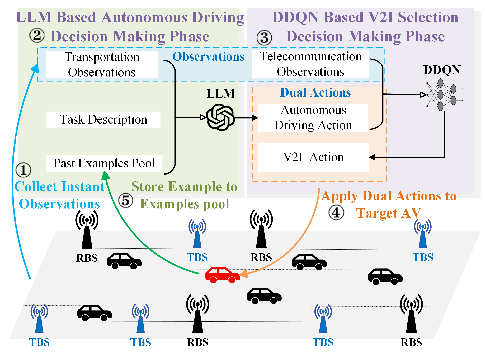

Hybrid LLM-DDQN based Joint Optimization of V2I Communication and Autonomous DrivingLarge language models (LLMs) have received considerable interest recently due to their outstanding reasoning and comprehension capabilities. This work explores applying LLMs to vehicular networks, aiming to jointly optimize vehicle-to-infrastructure (V2I) communications and autonomous driving (AD) policies. We deploy LLMs for AD decision-making to maximize traffic flow and avoid collisions for road safety, and a double deep Q-learning algorithm (DDQN) is used for V2I optimization to maximize the received data rate and reduce frequent handovers. In particular, for LLM-enabled AD,
 Related Publications
|